The 24 generated molecules closest to a real PARP inhibitor, out of
388 that passed the chemistry filters. Each card shows the generated
structure, and underneath it the nearest of the 6563 real inhibitors the
model was trained on — Tanimoto over Morgan fingerprints
(radius 2, 2048 bits).
This is the similar tail, not a typical sample. These
24 span 0.43–0.83, while the median
candidate sits at 0.27 and 92% fall below 0.40. The closest
ones are near-analogues: the top candidate differs from a known inhibitor
by a single atom. Read them as evidence that the model has learned real
PARP chemistry, not as novel chemical matter.
Similarity is structural only. Nothing here predicts that
a molecule inhibits PARP, and bond orders are reconstructed from 3D
coordinates with 85.2% exact accuracy on real molecules, so roughly one
structure in seven carries a wrong bond order or tautomer.
388candidates
47%carry a carboxamide
0.27median similarity
0.83best similarity
3.7median SA score
62%SA score under 4
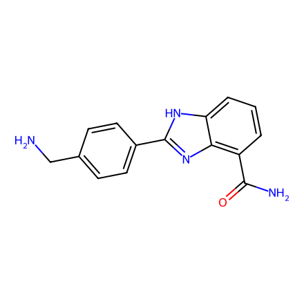
#10.83
MW
266
logP
1.8
arom. rings
3
stereocentres
0
SA score
2.1
strain/atom
2.3
NCc1ccc(-c2nc3c(C(N)=O)cccc3[nH]2)cc1
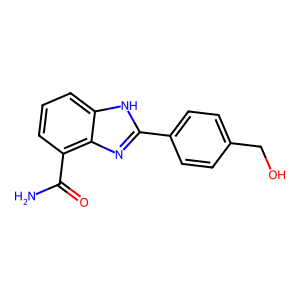
Nearest real inhibitorTanimoto 0.83Nearest named drugniraparib · 0.29
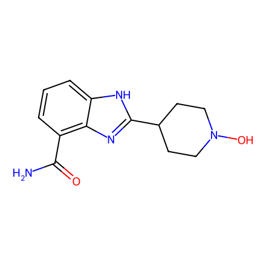
#20.80
MW
260
logP
1.2
arom. rings
2
stereocentres
0
SA score
2.7
strain/atom
2.2
NC(=O)c1cccc2[nH]c(C3CCN(O)CC3)nc12
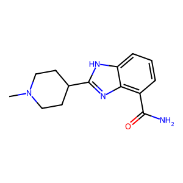
Nearest real inhibitorTanimoto 0.80Nearest named drugniraparib · 0.38
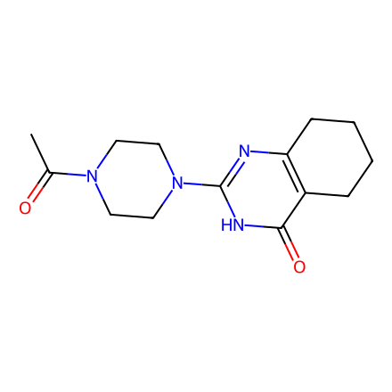
#30.71
MW
276
logP
0.3
arom. rings
1
stereocentres
0
SA score
2.5
strain/atom
0.1
CC(=O)N1CCN(c2nc3c(c(=O)[nH]2)CCCC3)CC1
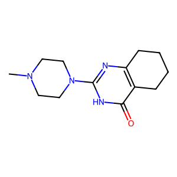
Nearest real inhibitorTanimoto 0.71Nearest named drugolaparib · 0.20
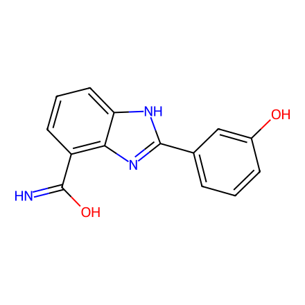
#40.70
MW
253
logP
2.8
arom. rings
3
stereocentres
0
SA score
2.4
strain/atom
2.9
N=C(O)c1cccc2[nH]c(-c3cccc(O)c3)nc12
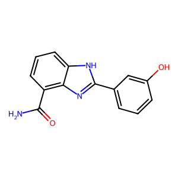
Nearest real inhibitorTanimoto 0.70Nearest named drugniraparib · 0.17
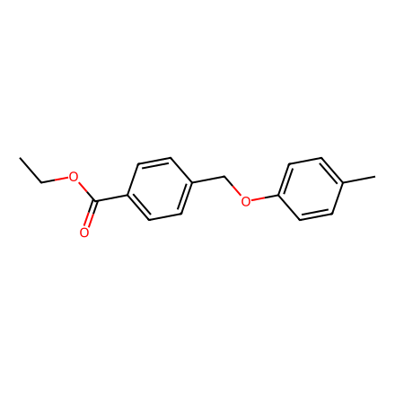
#50.68
MW
270
logP
3.8
arom. rings
2
stereocentres
0
SA score
1.4
strain/atom
2.9
CCOC(=O)c1ccc(COc2ccc(C)cc2)cc1
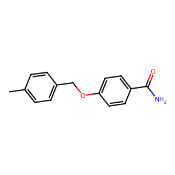
Nearest real inhibitorTanimoto 0.68Nearest named drugOUL35 · 0.28
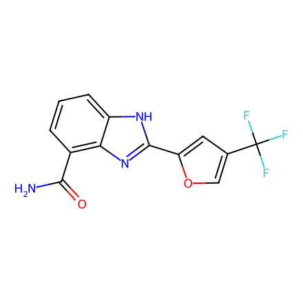
#60.67
MW
295
logP
2.9
arom. rings
3
stereocentres
0
SA score
2.8
strain/atom
1.6
NC(=O)c1cccc2[nH]c(-c3cc(C(F)(F)F)co3)nc12
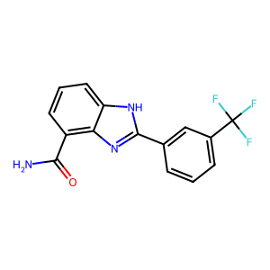
Nearest real inhibitorTanimoto 0.67Nearest named drug(S)-XY-05 · 0.32
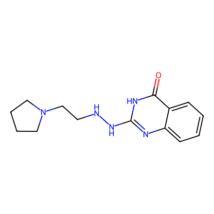
#70.56
MW
273
logP
0.9
arom. rings
2
stereocentres
0
SA score
2.5
strain/atom
2.5
O=c1[nH]c(NNCCN2CCCC2)nc2ccccc12
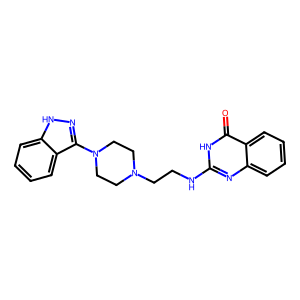
Nearest real inhibitorTanimoto 0.56Nearest named drugolaparib · 0.21